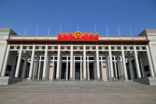
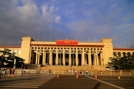
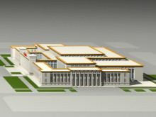

中国国家博物馆
中国国家博物馆，英文National Museum of China，简称国博，位于北京市中心天安门广场东侧，东长安街南侧，与人民大会堂东西相对称，是历史与艺术并重，集收藏、展览、研究、考古、公共教育、文化交流于一体的综合性博物馆。国博隶属于中华人民共和国文化和旅游部。
2013年末，中国国家博物馆总建筑面积近20万平方米，藏品100余万件，展厅48个。
国博是世界上单体建筑面积最大的博物馆，是中华文物收藏量最丰富的博物馆之一。2012年游客接待量达到537万人次，2013年达到745万人次。
2018年3月，国博取消纸质门票，观众持身份证即可直接进入参观。
2019年4月10日重装开馆。国博同时还宣布了4月11日将在国博举办的三场活动——“丝绸之路国家博物馆的功能与使命”全球博物馆馆长论坛、“殊方共享——丝绸之路国家博物馆文物精品展”、《海外藏中国古代文物精粹·英国大英博物馆卷》新书首发式。
2020年6月18日，国家博物馆预约服务系统显示，在观众预约参观之前，需要在预约界面的对话框中选择是否做过新冠病毒核酸检测。观众只有选择“是”，才可以进一步进行门票预约。
历史沿革
民国二年7月9日（1912年），中华民国政府教育部决定设立国立历史博物馆筹备处，以国子监为馆址。
民国七年7月（1918年），迁址到故宫的端门与午门。
民国九年11月（1920年），国立历史博物馆正式成立。
民国十五年10月（1926年），正式开馆。
1949年10月，改名为国立北京历史博物馆，隶属中央人民政府文化部。
1950年3月，成立中央革命博物馆筹备处。设址在北海团城，不久迁入故宫西华门武英殿。
1958年10月，在天安门广场东侧修建新馆。
1959年8月工程竣工，成为建国十周年十大建筑之一。
1959年10月，"中国通史陈列"公开预展。
1960年8月，“北京历史博物馆”更名为“中国历史博物馆”，“中央革命博物馆”更名为“中国革命博物馆”。
1969年9月，中国历史博物馆和中国革命博物馆合并，称中国革命历史博物馆。
1983年初，分设为中国历史博物馆和中国革命博物馆。
2003年2月28日，两馆再次合并，成立中国国家博物馆。
2007年1月31日，国博闭馆开始扩建，设计方案于同年春季公布。
2011年3月，中国国家博物馆新馆开放，此后试运营一年举办50余个展览，接待国内外观众410多万人次。
2018年3月，国博正式告别纸质门票，实行免票参观，观众持身份证即可直接入馆。除了身份证，非纸质临时身份证、老年证、户口本、户籍证明、社保卡、中小学生学生证、残疾证、军官证、士兵证、护照、港澳通行证、台胞证、驾照等有效证件也都可以作为入馆凭证。
2018年12月11日，曾在英国被拍卖的圆明园文物青铜“虎蓥”正式入藏中国国家博物馆。
2019年9月21日至10月2日，根据工作需要和安排，中国国家博物馆暂停对社会开放。
2019年10月3日，中国国家博物馆重新开馆。
建筑布局
建筑结构
中国国家博物馆是世界上建筑面积最大的博物馆，总建筑面积近20万平方米。总用地面积7万平方米。建筑高度42.5米，地上5层，地下2层。
建筑由两轴两区构成。两轴为：由西门到东门的东西轴线和由南到北的南北轴线。两区为：由中轴内中央大厅分隔的南北两个展区。西门面向天安门广场，与人民大会堂相对；北门面向长安街。南北艺术长廊长260米，高28米；顶部有368个采用中国传统建筑风格的藻井，有着独特的装饰、采光、照明和通风等作用。楼顶有近2万平方米的屋顶绿地，表现出了环保和节能的理念。
截止至2013年，有展厅数量48个，最大的2000平方米，最小的近800平方米。
另有近800个座位的剧场、近300个座位的学术报告厅（兼数码影院）、600平方米的演播室，以及2800平方米的图书馆。还有大面积对公众开放的休闲公共空间以及600个车位的地下停车场。
馆藏精品
人面鱼纹陶盆
新石器新石器时代前期仰韶文化
葬具
1955年陕西省西安市半坡出土
高16.5厘米、口径39.8厘米
此彩陶盆呈红色，口沿处绘间断黑彩带，内壁以黑彩绘出两组对称人面鱼纹。人面呈圆形，头顶有似发髻的尖状物和鱼鳍形装饰。前额右半部涂黑，左半部为黑色半弧形。眼睛细而平直，似闭目状。鼻梁挺直，成倒立的“T”字形。嘴巴左右两侧分置一条变形鱼纹，鱼头与人嘴外廓重合，似乎是口内同时衔着两条大鱼。另外，在人面双耳部位也有相对的两条小鱼分置左右，从而构成形象奇特的人鱼合体。在两个人面之间，有两条大鱼作相互追逐状。整个画面构图自由，极富动感，图案简洁并充满奇幻色彩。 古代半坡人在许多陶盆上都画有鱼纹和网纹图案，这应与当时的图腾崇拜和经济生活有关，半坡人在河谷阶地营建聚落，过着以农业生产为主的定居生活，兼营采集和渔猎，这种鱼纹装饰是他们生活的写照。 仰韶文化的彩陶图案中有大量的动物形纹饰，如鱼、鹿、蛙等，以鱼纹最为典型。人面鱼纹彩陶盆是公认的彩陶艺术精品。类似内容的彩陶盆在遗址中出土了很多件，多作为儿童瓮棺的棺盖来使用，很像一种特制的葬具。人面由人鱼合体而成，人头装束奇特，像是进行某种宗教活动的化妆形象，具有巫师的身份特征，因此这类图画一般被认为象征着巫师请鱼神附体，为夭折的儿童招魂祈福。也有人认为人面与鱼纹共存构成人鱼合体，寓意鱼已经被充分神化，可能是作为图腾来加以崇拜。
大盂鼎
西周
炊器
清道光年间陕西郿县礼村出土
通高101.9厘米 口径77.8厘米 重153.5千克
1951年潘达于女士捐赠
大盂鼎系清道光初年出土于陕西郿县礼村，先后为当地乡绅郭氏、县令周广盛以及左宗棠、潘祖荫等所有，1951年潘氏后人潘达于女士将其捐赠予上海博物馆，1959年入藏中国历史博物馆（今中国国家博物馆）。而另一尊同为盂所铸之鼎，形制略小，习称“小盂鼎”，器上铭文涉及西周与鬼方之间的战事，但此器在辗转收藏的过程中已不见踪迹，仅于著录中保存铭文拓本。 大盂鼎器壁较厚，立耳微外撇，折沿，敛口，腹部横向宽大，壁斜外张，近足外底处曲率较小，成垂腹状，下承三蹄足。器以云雷纹为地，颈部饰带状饕餮纹，足上端饰浮雕式饕餮纹，下衬两周凸弦纹，是西周早期大型、中型鼎的典型式样，雄伟凝重。 器内壁铸铭文19行291字，记述了周康王二十三年九月册命盂之事。铭文中周康王向盂讲述文王、武王的立国经验与商内、外之臣僚因沉湎于酒以致亡国的教训，告诫盂要效法其祖先，忠心辅佐王室，并赏赐盂鬯、命服、车马、邦司、人鬲、庶人等。《尚书·酒诰》是周公旦所作，用以告诫被封在商故地朝歌的武王少弟康叔封，文中有一语句“惟荒腆于酒，不惟自息乃逸，厥心疾很，不克畏死。辜在商邑，越殷国灭，无罹”，大意是说商纣好酒，不思其过，最终导致国灭邦亡。与大盂鼎铭文所言相合，透露出周人对于商人嗜酒误国这一前车之鉴的警示。 此器铭文中用字笔画粗细不等，且如“王”、“在”、“正”、“土”等字中有许多圆形或方形团块，象形意味仍较浓。又如铭文中“有”、“厥”、“又”等字波磔分明，体现了用笔过程中自觉的提、按意识。通篇文字布局规整，书风凝重。

三星塔拉玉龙
新石器新石器时代后期红山文化
1971年内蒙古翁牛特旗三星塔拉出土
高26厘米
玉龙由墨绿色的岫岩玉雕琢而成，周身光洁，头部长吻修目，鬣鬃飞扬，躯体卷曲若钩。造型生动，雕琢精美，有“中华第一龙”的美誉。 新石器时代很多遗址中都发现有类似龙形的遗存，或为蚌塑，或为彩绘，或为雕塑。关于龙的原型，研究者们提出过各种假说，如蛇、鳄鱼、蜥蜴、鱼、鲵、马、牛、猪、鹿、熊、虎、蚕、蛴螬、松树、云、闪电等等。商代甲骨文中的“龙”字和妇好墓出土的玉龙都显示，龙是一种巨头、有角、大口、曲身的神兽。新石器时代最符合这些特征的文物应属红山文化中的这种蜷体玉龙，安徽含山凌家滩、湖北天门肖家屋脊也都有类似的玉龙形象，它们有可能是龙的原始形态。 关于龙的起源说法不一，有蜥蜴说，鳄鱼说，至于龙首则有来自马首、牛首或猪首之说。这件玉龙是中国已发现的时代较早的龙的形象之一，从其首部特征看，吻部较长，鼻部前突，并上翘起棱，端面截平，有2个并排的鼻孔，似有猪首特征。这件玉龙用黑绿色玉制成，琢磨精细，具有相当高的艺术价值。
鹳鱼石斧图彩陶缸
新石器时代前期仰韶文化
葬具
1980年河南省临汝县阎村出土
高47厘米、口径32.7厘米、底径20.1厘米
鹳鱼石斧图彩陶缸外表呈红色，作直壁平底圆筒状。陶缸外壁有彩绘一幅。画面左侧为一只站立的白鹳，通身洁白，圆眼、长嘴、昂首挺立。鹳嘴上衔着一条大鱼，也全身涂白，并用黑线条清晰描绘出鱼身的轮廓。画面右侧竖立一柄石斧，斧身穿孔、柄部有编织物缠绕并刻划符号等。白鹳的眼睛很大，目光炯炯有神，鹳身微微后仰，头颈高扬。鱼眼则画得很小，身体僵直，鱼鳍低垂，毫无挣扎反抗之势，与白鹳在神态上形成强烈的反差。 陶缸属新石器时代仰韶文化类型，作者用白色在夹砂红陶的缸外壁绘出鹳、鱼、石斧，以粗重结实的黑线勾出鹳的眼睛、鱼身和石斧的结构。左绘有鹳鸟一只，昂首挺立，六趾抓地，二目圆睁，口含一条大鱼；右绘一把石斧，斧头捆绑在竖立的木棒上端。作者为表现鹤的轻柔白羽，把鹳身整个涂抹成白色，犹如后代中国画的“没骨”画法；石斧和鱼的外形则采用“勾线”画法，用简练、流畅的粗线勾勒出轮廓；斧、鱼身中填充色彩，犹如后代中国画的“填色”画法。由于这幅画具备了中国画的一些基本画法，有的学者认为它是中国画的雏形。
子龙鼎
商后期商末周初
综观武当山古建筑群，荟萃了中国古代优秀建筑法式，集中体现了皇宫的宏伟壮丽，道教的神奇玄妙，园林的幽静典雅，民间的淳朴节俭等多种特色，形成了丰富多彩的传统建筑风格。明代张开东把武当山的建筑称为“补秦皇汉武之遗，历朝罕见；张金阙琳宫之胜，亦寰宇所无”。
传20世纪20年代河南辉县出土
通高103厘米 耳高22厘米 腹高43厘米 足高36.5厘米 口径80厘米
通高103厘米 耳高22厘米 腹高43厘米 足高36.5厘米 口径80厘米
子龙鼎，因器内壁近口缘处铸有铭文“子龙”而得名。此器厚立耳，微外撇，外侧饰两周凹弦纹，折沿宽缘，腹部横向宽大，微下垂，下承三蹄足。器颈部以云雷纹为地，周饰2类6组浮雕式饕餮纹，足上端饰高浮雕式饕餮纹，下衬三周凸弦纹。 据传，子龙鼎系20世纪20年代出土于河南辉县，后流入日本，又辗转至香港。2006年4月，在中央财政设立的“国家重点珍贵文物征集专项经费”的支持下，中国国家文物局将子龙鼎征集回国。 子龙鼎所铸铭文“子龙”之“子”字较小，下“龙”字以双线勾勒，虬劲有力，恰如一竖立且尾部向右上盘卷的龙形，瓶形角，圆目，张口，生动传神。器颈部所饰，一为有首无身饕餮纹，瓶形角；二为首身完整饕餮纹，卷角较宽， 尾部下卷，爪后有长距，以凸起的鼻梁部位为对称轴线，躯干向两侧同时展开，形成一首双身，意在以平面展示立体。两类饕餮纹相间环列，静中求变。整个饕餮纹带由一个单元纹样向左右两方反复连续伸展构成，整齐并富有节奏。器足上端所饰饕餮纹卷角如羊，角尖部内卷并高高凸起，愈显动感，也与鼻梁部位耸起的扉棱增加了器物的稳定。 子龙鼎造型雄伟，在商代圆鼎中体积最大，而且铸造精细，是中国古代青铜铸造技术的经典之作。
后母戊鼎
商后期约公元前14～前11世纪
礼器
1939年河南省安阳市武官村出土
高133厘米、口长112厘米、口宽79.2厘米
器厚立耳，折沿，腹部呈长方形，下承四柱足。器腹四转角、上下缘中部、足上部均置扉棱。以云雷纹为地，器耳上饰一列浮雕式鱼纹，耳外侧饰浮雕式双虎食人首纹，腹部周缘饰饕餮纹，柱足上部饰浮雕式饕餮纹，下部饰两周凸弦纹。 “后母戊”青铜方鼎（曾称“司母戊鼎”），形制巨大，雄伟庄严，重832.84千克，是已知中国古代最重的青铜器。器腹部内壁铸铭“后母戊”，是商王母亲的庙号。 “后母戊”青铜方鼎器身与四足为整体铸造，鼎耳则是在鼎身铸成之后再装范浇铸而成。铸造此鼎，所需金属原料超过1000千克。制作如此大型器物，在塑造泥模、翻制陶范、合范灌注等环节中，存在一系列复杂的技术问题。“后母戊”青铜鼎的铸造，充分说明商代后期的青铜铸造不仅规模宏大，而且组织严密，分工细致，足以代表高度发达的商代青铜文化。 此外，经光谱定性分析与化学分析的沉淀法所进行的定量分析，“后母戊”青铜鼎含铜84.77%、锡11.64%、铅2.79%，与战国时期成书的《考工记·筑氏》所记鼎的铜锡比例基本相符，从中可见中国古代青铜文明的内在传承。
虎纹石磬
商
打击乐器
1950年河南省安阳市殷墟出土
长84厘米、宽42厘米、厚2．5厘米
早在新石器时代，中国就有了石磬。在河南安阳殷墟出土多件商代石磬，妇好墓中出土5件长条形石磬，制作比较精细，磬身上分别刻有文字和鸮纹，其中有3件，均为白色，泥质灰岩，形亦相近，可能是一套编磬。这件虎纹石磬可称为商代磬中之王，正面刻有雄健虎纹，据测定此磬已有5个音阶，可演奏不同乐曲。